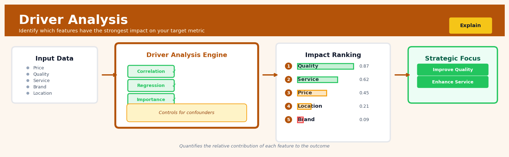

Driver Analysis#


The biggest mistake in driver analysis is confusing correlation with causation when you haven't controlled for confounders. Always run your analysis with interaction terms and check for Simpson's paradox, especially in observational data where a feature might appear important simply because it correlates with the true driver. If you're making strategic decisions based on drivers, invest time in causal inference methods like propensity score matching or instrumental variables to validate your findings.
The 60-Second Version#
What it does: Driver Analysis tells you which factors matter most in explaining why your outcome varies—like which features actually drive customer satisfaction or sales performance.
When to use it: You have multiple potential explanatory factors (marketing spend, price, product features, demographics) and need to know which ones to prioritize for action or investment.
What you get back: A ranked list showing each factor’s contribution to explaining your outcome, so you can focus resources on the levers that move the needle most.
Difficulty |
Moderate |
Typical runtime |
Seconds to minutes on 100K rows |
What you bring |
A target metric you want to explain and multiple candidate driver variables |
What you get |
Percentage contribution or importance score for each driver |
Heuristix bucket |
Explain — Causal Analysis & Interpretation |
Driver Analysis measures predictive importance, not causation—a strong driver may be a symptom rather than a root cause you can actually control.
Learning Objectives#
After reading this chapter, a business user will be able to:
Identify when Driver Analysis is the appropriate technique by distinguishing it from simple correlation studies, A/B tests, and causal inference scenarios—particularly when you need to rank factors influencing a business metric without claiming causality.
Translate Driver Analysis outputs (relative importance scores, contribution percentages, dominance rankings) into actionable narratives that explain to executives which levers matter most for outcomes like customer satisfaction, revenue, or churn.
Prioritize business interventions by using driver rankings to allocate resources toward high-impact variables while recognizing when multicollinearity or confounding requires additional investigation before acting.
After reading this chapter, a data scientist will be able to:
Implement at least three Driver Analysis methods (Shapley value regression, relative weights analysis, and dominance analysis) in Python or R, selecting the appropriate technique based on correlation structure and model type.
Configure critical methodological choices—including whether to use normalized vs. raw importance metrics, how to handle correlated predictors, and when to apply model-agnostic vs. model-specific approaches—with explicit awareness of how each choice affects interpretation.
Validate Driver Analysis results by detecting instability from multicollinearity, diagnosing when rankings change drastically with small data perturbations, and applying bootstrap or cross-validation checks to assess the robustness of importance rankings.
Overview#
Driver Analysis is a family of statistical and machine learning techniques designed to quantify the relative importance of predictor variables in explaining variation in a target outcome. Its core purpose is to decompose the total explanatory power of a model—typically measured by \(R^2\) or similar metrics—into contributions attributable to each input variable, enabling analysts to rank factors by their predictive influence. Driver Analysis belongs to the broader class of variable importance and feature attribution methods, with strong connections to regression decomposition, game-theoretic allocation (Shapley values), and relative weights analysis.
When to Use This#
Prioritising marketing investments: When you need to determine which marketing channels contribute most to customer acquisition or revenue, allowing budget reallocation to high-impact activities.
Understanding customer satisfaction drivers: When survey data contains multiple service dimensions and you must identify which aspects most strongly influence overall satisfaction or Net Promoter Score.
Diagnosing operational performance: When multiple process variables affect throughput, defect rates, or efficiency, and you need to focus improvement efforts on the most influential factors.
Simplifying predictive models: When a model contains many features and you want to identify a parsimonious subset that captures most of the explanatory power without significant loss in predictive accuracy.
Supporting root cause analysis: When an outcome has shifted unexpectedly and stakeholders need to understand which input factors are most likely responsible for the change.
Informing product development: When customer feedback spans multiple product attributes and you must prioritise which features to enhance based on their impact on purchase intent or loyalty.
Regulatory and compliance explanations: When you need to demonstrate which variables are driving model decisions for audit purposes or regulatory submissions.
Do NOT use this when: Your goal is causal inference and you lack experimental or quasi-experimental data—driver analysis identifies statistical association, not causation.
Do NOT use this when: The predictors are nearly perfectly collinear, as importance decomposition becomes numerically unstable and conceptually ambiguous.
Do NOT use this when: The outcome is categorical with many classes—standard driver analysis assumes a continuous or binary outcome with appropriate link functions.
Questions This Answers#
Understanding What Drives Our Results#
Which factors are actually moving the needle on customer retention — is it product quality, price, or service response time?
Why did revenue drop 12% in Q3 — was it the pricing change, the reduced ad spend, or something else entirely?
Of all the things we’re measuring in our employee engagement surveys, which three actually predict turnover?
Is our NPS being driven more by product features or by customer support interactions?
We track 47 different metrics on our website — which ones actually correlate with conversion?
Prioritizing Where to Invest#
If we only have budget to improve two things next quarter, which initiatives would have the biggest impact on sales?
Should we invest more in brand awareness or performance marketing to drive customer acquisition?
We’re debating between upgrading our mobile app versus improving checkout speed — which will move revenue more?
Where should our product team focus — fixing bugs, adding features, or improving onboarding?
Is it worth spending $2M on store renovations, or would that money deliver more ROI through staff training?
Comparing Across Segments and Scenarios#
What drives customer satisfaction in our enterprise segment versus SMB — are they motivated by different things?
Do the same factors predict churn in North America as they do in Europe?
For our premium tier customers, is pricing sensitivity a bigger factor than for standard customers?
Why does the Boston market perform 23% better than Chicago when we’re running the same playbook in both cities?
How It Works#
Imagine you’re trying to understand why your local coffee shop’s daily revenue varies so much. Some days bring in \(2,000, others barely \)800. You suspect it’s a mix of factors: weather (sunny vs. rainy), day of week (Monday slump vs. Saturday rush), whether there’s a promotion running, and foot traffic from a nearby office building. Driver Analysis is like hiring a financial detective who doesn’t just confirm that all four factors matter—instead, they give you a precise breakdown: “Weather explains 40% of your revenue swings, day of week explains 30%, promotions explain 20%, and office traffic explains 10%.” Now you know exactly where to focus your energy.
DRIVER ANALYSIS PROCESS
INPUT: Sales data with multiple factors
┌──────────┬─────────┬──────┬───────────┬────────┐
│ Weather │ Day │ Promo│ Traffic │ Sales │
├──────────┼─────────┼──────┼───────────┼────────┤
│ Sunny │ Saturday│ Yes │ High │ $2,100 │
│ Rainy │ Monday │ No │ Low │ $ 750 │
│ Cloudy │ Friday │ Yes │ Medium │ $1,450 │
│ ... │ ... │ ... │ ... │ ... │
└──────────┴─────────┴──────┴───────────┴────────┘
↓
BUILD PREDICTIVE MODEL
↓
DECOMPOSE PREDICTIONS
↓
OUTPUT: Importance scores for each driver
┌──────────────────┬────────────┬────────────────┐
│ Driver │ Importance │ Visual │
├──────────────────┼────────────┼────────────────┤
│ Weather │ 40% │ ████████ │
│ Day of Week │ 30% │ ██████ │
│ Promotions │ 20% │ ████ │
│ Office Traffic │ 10% │ ██ │
└──────────────────┴────────────┴────────────────┘
Step 1: Gather your outcome and potential drivers. You start with historical data where you’ve recorded your target outcome (like sales, customer satisfaction, or churn rate) alongside every factor you think might influence it. These factors are your candidate drivers—anything from prices to weather to product features.
Step 2: Build a predictive model using all drivers together. Driver Analysis fits a statistical model (often regression-based or machine learning) that uses all your candidate factors simultaneously to predict the outcome. This model captures how the drivers work together, including any overlapping effects—like weather and day-of-week both affecting weekend behavior.
Step 3: Measure each driver’s unique contribution. Here’s where the magic happens. The technique systematically removes or shuffles each driver and measures how much predictive accuracy drops. If removing weather causes a big drop in prediction quality, weather is important. If removing office traffic barely changes anything, it’s not a key driver.
Step 4: Account for relationships between drivers. When drivers correlate with each other (sunny days and Saturdays often coincide), the analysis fairly distributes credit. It doesn’t just ask “How much does weather predict alone?” but rather “How much does weather add given everything else we know?”
Step 5: Translate contributions into percentages. The technique converts each driver’s contribution into a share of the total explanatory power. These percentages always sum to one hundred, giving you a clear ranking: your top driver might explain 40% of the variation, while minor factors contribute only 5% each.
The key insight: Driver Analysis solves the credit assignment problem by isolating each factor’s incremental contribution after accounting for all others, revealing not just what matters, but exactly how much each factor matters relative to the rest.
The Intuition#
Imagine you are the manager of a restaurant and you want to understand why some evenings generate more revenue than others. You have data on several factors: the number of staff on shift, whether there was a local event, the weather, and whether you ran a promotion. Each of these factors correlates with revenue, but they also correlate with each other—local events tend to happen on weekends when you have more staff, and promotions are more common when weather is poor. If you simply look at the correlation between staff numbers and revenue, you might overstate the importance of staffing because some of that correlation is really due to events happening on the same nights.
Driver Analysis solves this attribution puzzle by carefully partitioning the total variance explained by your model. Think of the \(R^2\) of your regression as a pie representing all the revenue variation your factors can collectively explain. Driver Analysis slices that pie fairly, giving each factor credit for the portion of explained variance that belongs to it—accounting for the overlap caused by correlations. The challenge is that when variables are correlated, some of the explained variance is “shared” and could legitimately be attributed to multiple predictors. Different driver analysis methods handle this shared variance differently, but all aim to produce a single importance score per variable that sums (or approximately sums) to the total \(R^2\).
The most principled approach draws on game theory. Imagine each predictor as a player in a cooperative game where the “payout” is the model’s explanatory power. The Shapley value—a concept from economics—calculates each player’s fair contribution by averaging their marginal contribution across all possible orderings in which they could join the game. This ensures that the importance scores satisfy desirable properties: they sum to the total \(R^2\), they are symmetric (identical predictors get identical scores), and a predictor that adds nothing in any context receives zero importance. This game-theoretic foundation gives driver analysis both mathematical elegance and intuitive fairness.
The Mathematics#
Problem Setup and Notation#
Let \(\mathbf{y} \in \mathbb{R}^n\) be a continuous outcome variable measured on \(n\) observations, and let \(\mathbf{X} \in \mathbb{R}^{n \times p}\) be a matrix of \(p\) predictor variables. We assume all variables are standardised to have mean zero and unit variance. Consider a linear regression model:
where \(\boldsymbol{\beta} \in \mathbb{R}^p\) is the coefficient vector and \(\boldsymbol{\varepsilon}\) is a vector of errors with \(\mathbb{E}[\boldsymbol{\varepsilon}] = \mathbf{0}\).
The coefficient of determination is:
where \(\mathbf{R}_{XX}\) is the \(p \times p\) correlation matrix of predictors and \(\boldsymbol{\beta}\) here represents standardised coefficients. Our goal is to decompose \(R^2\) into \(p\) non-negative contributions \(\{I_1, I_2, \ldots, I_p\}\) such that:
Method 1: Shapley Value Decomposition (LMG/Lindeman-Merenda-Gold)#
The Shapley value approach computes each predictor’s importance as its average marginal contribution to \(R^2\) across all possible subsets of predictors. For predictor \(j\), define \(S \subseteq \{1, \ldots, p\} \setminus \{j\}\) as any subset not containing \(j\). Let \(R^2(S)\) denote the \(R^2\) of the model using only predictors in \(S\), with \(R^2(\emptyset) = 0\).
The Shapley importance for predictor \(j\) is:
This formula averages the marginal contribution \(R^2(S \cup \{j\}) - R^2(S)\) over all \(2^{p-1}\) subsets, weighted by the number of orderings in which that subset configuration arises.
Properties:
Efficiency: \(\sum_{j=1}^{p} I_j^{\text{Shapley}} = R^2\)
Symmetry: If predictors \(j\) and \(k\) contribute identically in all subsets, \(I_j = I_k\)
Null player: If predictor \(j\) adds zero marginal \(R^2\) in every subset, \(I_j = 0\)
Non-negativity: \(I_j \geq 0\) for all \(j\) (in the regression context)
Computational complexity: The exact computation requires fitting \(2^p\) models, which becomes infeasible for \(p > 15\). Approximation methods (e.g., sampling permutations) are used for larger \(p\).
Method 2: Relative Weights Analysis (Johnson’s Epsilon)#
Relative weights analysis avoids the exponential complexity by using a transformation that orthogonalises the predictors. Let \(\mathbf{R}_{XX} = \mathbf{V} \boldsymbol{\Lambda} \mathbf{V}^\top\) be the eigendecomposition of the predictor correlation matrix. Define the orthogonalised predictors:
so that \(\mathbf{Z}^\top \mathbf{Z} / n = \mathbf{I}\). Regress \(\mathbf{y}\) on \(\mathbf{Z}\) to obtain coefficients \(\boldsymbol{\gamma}\). The relative weight for predictor \(j\) is:
where \(\lambda_{jk}\) is the \((j,k)\) element of \(\mathbf{V} \boldsymbol{\Lambda}^{-1/2}\), representing the loading of original predictor \(j\) on orthogonal component \(k\).
The relative weights sum exactly to \(R^2\):
Method 3: Dominance Analysis#
Dominance analysis establishes ordinal rankings through pairwise comparisons. Predictor \(j\) completely dominates predictor \(k\) if:
Weaker forms include conditional dominance (averaging within subset sizes) and general dominance (comparing overall Shapley values). The general dominance statistic equals the Shapley importance.
Assumptions#
Linearity: The relationship between predictors and outcome is linear (or adequately approximated by a linear model)
No perfect multicollinearity: \(\mathbf{R}_{XX}\) is positive definite
Standardisation: Variables are standardised for meaningful comparison of importance magnitudes
Closed system: All relevant predictors are included; omitted variable bias affects interpretation
Edge Cases and Degeneracies#
Perfect collinearity: If \(\det(\mathbf{R}_{XX}) = 0\), the decomposition is undefined. Remove redundant predictors.
Suppressor variables: A predictor with near-zero bivariate correlation but non-zero importance indicates suppression; report with caution.
Negative semi-partial correlations: Can occur but Shapley values remain non-negative in the linear regression context due to monotonicity of \(R^2\).
Understanding the Mathematics#
The Linear Model#
The equation: $\(y = \beta_0 + \beta_1 x_1 + \beta_2 x_2 + \cdots + \beta_p x_p + \varepsilon\)$
Read it aloud: “The outcome equals a baseline value, plus the first driver times its coefficient, plus the second driver times its coefficient, and so on for all drivers, plus some random error.”
What each symbol means:
\(y\) = the outcome we’re trying to predict (e.g., revenue, customer satisfaction)
\(\beta_0\) = the baseline or intercept (what \(y\) would be if all drivers were zero)
\(\beta_1, \beta_2, \ldots, \beta_p\) = coefficients that measure each driver’s direct effect
\(x_1, x_2, \ldots, x_p\) = the driver variables (e.g., price, ad spend, product quality)
\(\varepsilon\) = random noise we can’t explain
A concrete numerical example: Predicting monthly revenue (\(y\)) from two drivers: advertising spend (\(x_1\)) and discount rate (\(x_2\)). If \(\beta_0 = 50{,}000\), \(\beta_1 = 3.5\), \(\beta_2 = -2{,}000\), and this month we spent \(10{,}000\) on ads with a 15% discount, then:
Why this equation matters: This model captures direct relationships but ignores correlation between drivers—if ad spend and discounts move together, we can’t yet tell which truly drives revenue.
R-squared Decomposition#
The equation: $\(R^2 = \frac{\text{SS}_\text{reg}}{\text{SS}_\text{tot}} = 1 - \frac{\text{SS}_\text{res}}{\text{SS}_\text{tot}}\)$
Read it aloud: “R-squared equals the variation explained by the model divided by total variation in the outcome, or equivalently, one minus the unexplained variation divided by total variation.”
What each symbol means:
\(R^2\) = proportion of outcome variance our drivers explain (0 to 1)
\(\text{SS}_\text{reg}\) = sum of squared differences between predictions and the mean
\(\text{SS}_\text{tot}\) = sum of squared differences between actual values and the mean
\(\text{SS}_\text{res}\) = sum of squared prediction errors
A concrete numerical example: We predict customer satisfaction scores for 100 customers. The total variance across all customers is \(\text{SS}_\text{tot} = 2{,}500\). Our model’s predictions have \(\text{SS}_\text{reg} = 1{,}750\). Then:
Our drivers explain 70% of why satisfaction varies across customers.
Why this equation matters: Without decomposing total variance, we’d have no common currency to compare how much each driver contributes to explanatory power.
Relative Weight (Johnson’s Method)#
The equation: $\(\text{RW}_j = \sum_{k=1}^{p} \lambda_k r^2_{x_j, z_k}\)$
Read it aloud: “The relative weight of driver \(j\) equals the sum, across all orthogonal components, of each component’s eigenvalue multiplied by the squared correlation between driver \(j\) and that component.”
What each symbol means:
\(\text{RW}_j\) = the share of \(R^2\) attributable to driver \(j\)
\(\lambda_k\) = eigenvalue of the \(k\)th orthogonal component (its contribution to \(R^2\))
\(r^2_{x_j, z_k}\) = squared correlation between original driver \(j\) and component \(k\)
\(p\) = total number of drivers
A concrete numerical example: For driver “Price” in a two-driver model: Component 1 has \(\lambda_1 = 0.48\), and Price correlates with it at \(r^2 = 0.65\). Component 2 has \(\lambda_2 = 0.22\) with \(r^2 = 0.35\). Then:
Price accounts for 38.9% of the model’s explanatory power.
Why this equation matters: This fairly allocates \(R^2\) even when drivers are correlated—it prevents double-counting shared variance that simple coefficient-squaring would miss.
The Big Picture#
The mathematics of Driver Analysis solves a deceptively hard problem: when multiple correlated factors jointly predict an outcome, how much credit does each deserve? The equations decompose total predictive power (\(R^2\)) into additive contributions, ensuring every piece of explained variance is assigned exactly once. We can’t just square regression coefficients because correlated drivers share variance—the math must untangle this overlap. Relative weights and Shapley values accomplish this through orthogonal transformations or game-theoretic fair allocation, respectively. In essence, the mathematics is an accounting system that divides up credit for prediction fairly, even when the predictors aren’t independent.
Python Implementation#
import numpy as np
import pandas as pd
from itertools import combinations
from scipy.linalg import eigh
from sklearn.linear_model import LinearRegression
from sklearn.preprocessing import StandardScaler
# Generate realistic synthetic data: customer satisfaction drivers
np.random.seed(42)
n = 500
# Create correlated predictors (product quality, service speed, price fairness, staff friendliness)
mean = [0, 0, 0, 0]
# Correlation matrix with moderate correlations
cov = [
[1.0, 0.4, 0.2, 0.3],
[0.4, 1.0, 0.1, 0.5],
[0.2, 0.1, 1.0, 0.2],
[0.3, 0.5, 0.2, 1.0]
]
X_raw = np.random.multivariate_normal(mean, cov, n)
# True coefficients (product quality is most important, then service)
true_beta = np.array([0.5, 0.3, 0.15, 0.1])
y = X_raw @ true_beta + np.random.normal(0, 0.5, n)
# Create DataFrame
df = pd.DataFrame(X_raw, columns=['product_quality', 'service_speed', 'price_fairness', 'staff_friendliness'])
df['satisfaction'] = y
# Standardise all variables
scaler = StandardScaler()
X = scaler.fit_transform(df.drop('satisfaction', axis=1))
y = (df['satisfaction'] - df['satisfaction'].mean()) / df['satisfaction'].std()
feature_names = ['product_quality', 'service_speed', 'price_fairness', 'staff_friendliness']
p = X.shape[1]
# -----------------------------
# Method 1: Shapley Value (LMG)
# -----------------------------
def compute_r2(X, y, indices):
"""Compute R² for a subset of predictors."""
if len(indices) == 0:
return 0.0
model = LinearRegression(fit_intercept=False)
model.fit(X[:, indices], y)
y_pred = model.predict(X[:, indices])
ss_res = np.sum((y - y_pred) ** 2)
ss_tot = np.sum(y ** 2) # y is centered
return 1 - ss_res / ss_tot
def shapley_importance(X, y):
"""Compute exact Shapley values for R² decomposition."""
n_features = X.shape[1]
importances = np.zeros(n_features)
all_indices = set(range(n_features))
for j in range(n_features):
others = list(all_indices - {j})
shapley_sum = 0.0
# Iterate over all subsets of other features
for size in range(len(others) + 1):
for subset in combinations(others, size):
subset_list = list(subset)
# Marginal contribution of feature j
r2_with = compute_r2(X, y, subset_list + [j])
r2_without = compute_r2(X, y, subset_list)
marginal = r2_with - r2_without
# Shapley weight
weight = (np.math.factorial(size) * np.math.factorial(n_features - size - 1)
/ np.math.factorial(n_features))
shapley_sum += weight * marginal
importances[j] = shapley_sum
return importances
shapley_values = shapley_importance(X, y)
print("=== Shapley Value (LMG) Driver Analysis ===")
for name, imp in zip(feature_names, shapley_values):
print(f" {name:20s}: {imp:.4f} ({imp/shapley_values.sum()*100:.1f}%)")
print(f" {'Total R²':20s}: {shapley_values.sum():.4f}")
# -----------------------------------
# Method 2: Relative Weights Analysis
# -----------------------------------
def relative_weights(X, y):
"""Compute Johnson's relative weights."""
# Correlation matrix of predictors
R_xx = np.corrcoef(X.T)
# Eigendecomposition
eigenvalues, eigenvectors = eigh(R_xx)
# Transformation matrix: V * Lambda^(-1/2)
Lambda_sqrt_inv = np.diag(1.0 / np.sqrt(eigenvalues))
transform = eigenvectors @ Lambda_sqrt_inv
# Orthogonalised predictors
Z = X @ transform
# Regression on orthogonalised predictors
model = LinearRegression(fit_intercept=False)
model.fit(Z, y)
gamma = model.coef_
# Relative weights
rel_weights = np.sum((transform ** 2) * (gamma ** 2), axis=1)
return rel_weights
rw_values = relative_weights(X, y)
print("\n=== Relative Weights Analysis ===")
for name, imp in zip(feature_names, rw_values):
print(f" {name:20s}: {imp:.4f} ({imp/rw_values.sum()*100:.1f}%)")
print(f" {'Total R²':20s}: {rw_values.sum():.4f}")
# ----------------------------------------
# Compare with simple standardised betas
# ----------------------------------------
model_full = LinearRegression(fit_intercept=False)
model_full.fit(X, y)
std_betas = model_full.coef_
print("\n=== Standardised Regression Coefficients ===")
for name, beta in zip(feature_names, std_betas):
print(f" {name:20s}: {
## Visualisations


## Using This in Heuristix
### What You'll Need
The Driver Analysis node expects a clean, analytics-ready dataset where each row represents an observation and columns represent your target variable and potential drivers.
**Required inputs:**
- **One target column** (numeric) — the outcome you want to explain (e.g., customer satisfaction score, revenue, conversion rate)
- **Two or more driver columns** (numeric or categorical) — the factors that might influence your target
**Example input data:**
| customer_id | satisfaction_score | price | delivery_days | product_quality | region |
|-------------|-------------------|-------|---------------|----------------|--------|
| 001 | 8.5 | 49.99 | 3 | 9.2 | North |
| 002 | 6.2 | 89.99 | 7 | 7.1 | South |
| 003 | 9.1 | 39.99 | 2 | 9.8 | North |
The node will automatically handle categorical variables by encoding them appropriately. Missing values should be handled upstream—consider using an Imputation node first if needed.
### Configuration Parameters
| Parameter | What It Controls | Default | When to Change |
|-----------|-----------------|---------|----------------|
| **Target Variable** | Which column to explain | (none) | Always set this to your outcome of interest |
| **Driver Variables** | Which columns to analyze as predictors | (all others) | Deselect columns that are IDs, dates, or known non-drivers |
| **Method** | Algorithm for importance calculation | Shapley | Use "Relative Weights" for faster results on large datasets; stick with Shapley for most accurate attribution |
| **Normalize Importance** | Whether to scale contributions to sum to 100% | Yes | Turn off if you want to see raw R² contributions instead of percentages |
| **Min Observations** | Minimum rows required for analysis | 30 | Increase to 100+ for more stable estimates with many drivers |
| **Confidence Level** | Statistical confidence for importance intervals | 95% | Lower to 90% if you want narrower uncertainty bands |
### What You'll Get Out
**Main visualization:** A horizontal bar chart showing each driver ranked by importance, with bars representing the percentage of variance explained. Drivers are color-coded from most important (darker) to least important (lighter).
**Data outputs:** The node adds these columns to your dataset and passes it forward:
- `driver_importance_[variable]` — numeric importance score for each driver
- `driver_rank_[variable]` — ordinal ranking (1 = most important)
**Summary table:** A sortable table showing:
- Driver name
- Importance score (% of R² explained)
- Confidence interval
- Cumulative importance (running total)
**Model metrics card:** Displays overall model R², adjusted R², and number of observations analyzed.
### Connecting Downstream
After Driver Analysis, you'll typically want to:
1. **Filter node** → Focus on just the top 3-5 drivers for deeper investigation
2. **Segmentation node** → Check if driver importance varies across customer segments or regions
3. **Scenario Analysis node** → Model what happens if you improve your top drivers by 10%
4. **Export node** → Share the importance rankings with stakeholders
The enriched dataset with importance scores flows through, so you can use those scores in conditional logic or visualizations.
### Quick Start: Finding What Drives Customer Satisfaction
1. **Connect your customer data** to the Driver Analysis node (ensure you have satisfaction scores and potential drivers like price, quality, delivery time)
2. **Set Target Variable** to your satisfaction metric (e.g., `nps_score` or `csat`)
3. **Leave Driver Variables** at default to consider all factors, or manually select 5-10 key candidates
4. **Keep Method as "Shapley"** for balanced accuracy and interpretability
5. **Run the analysis** and examine the bar chart—your top 3 drivers are your primary action levers
6. **Connect a Segmentation node** to check if these drivers matter equally for all customer types
### Practical Tips from the Field
**Start broad, then narrow.** Run your first analysis with all plausible drivers included. You can always filter down, but starting too narrow might miss surprises.
**Watch for multicollinearity.** If you see wildly different importance scores across runs, you may have highly correlated drivers (like "price" and "price_tier"). Consider removing redundant variables.
**Context matters more than ranking.** A driver ranked #3 with 18% importance is still highly actionable. Don't fixate only on #1.
**Check the cumulative column.** If your top 4 drivers explain 80% of variance, you've found your leverage points. The long tail of small drivers rarely deserves attention.
**Segment before concluding.** Driver importance often varies dramatically across customer types, geographies, or product lines. What drives satisfaction for enterprise customers may not matter to SMBs.
## Config Recipes
### Recipe 1: Quick Exploration
**When to use:** Initial stakeholder meeting where you need directional insights from a new dataset in under 5 minutes.
**Settings:**
| Parameter | Value | Why |
|-----------|-------|-----|
| `method` | `"shapley"` | Fast approximation, robust to collinearity |
| `n_samples` | `100` | Subset data for speed |
| `bootstrap_iterations` | `0` | Skip uncertainty quantification |
| `feature_selection` | `"none"` | Include all variables initially |
| `model` | `"linear"` | Fastest to fit |
**What you get:** Rank-ordered driver list with point estimates, no confidence intervals, completed in seconds.
**Trade-off:** No statistical significance testing and potentially unstable estimates with correlated predictors.
### Recipe 2: Production-Ready Reporting
**When to use:** Final deliverable for executive dashboards or regulatory documentation requiring defensible importance metrics.
**Settings:**
| Parameter | Value | Why |
|-----------|-------|-----|
| `method` | `"relative_weights"` | Orthogonal decomposition handles collinearity |
| `bootstrap_iterations` | `1000` | Stable confidence intervals |
| `ci_level` | `0.95` | Standard reporting threshold |
| `feature_selection` | `"vif_threshold"` | Remove redundant features (VIF > 5) |
| `model` | `"linear"` | Interpretable coefficients |
| `validation` | `"5_fold_cv"` | Guard against overfitting |
**What you get:** Publication-quality importance scores with error bars, validated on holdout folds.
**Trade-off:** 10–100× slower than exploration mode; linear model may miss nonlinear effects.
### Recipe 3: High-Dimensional Survey Data
**When to use:** Customer satisfaction surveys with 50+ Likert-scale predictors and severe multicollinearity (typical inter-item correlation > 0.6).
**Settings:**
| Parameter | Value | Why |
|-----------|-------|-----|
| `method` | `"dominance_analysis"` | Evaluates all subset combinations |
| `feature_selection` | `"pca_components"` | Reduce to 12–15 components |
| `variance_threshold` | `0.85` | Retain 85% cumulative variance |
| `model` | `"ridge"` | L2 penalty stabilizes correlated inputs |
| `alpha` | `1.0` | Moderate regularization strength |
**What you get:** Importance scores for principal components that can be reverse-mapped to original questions.
**Trade-off:** Dominance analysis computationally prohibitive beyond ~15 features without PCA pre-processing; component interpretation requires extra step.
### Recipe 4: Causal Validation Check
**When to use:** You have a causal DAG from domain experts and want to verify your observational driver rankings align with assumed causal structure before committing to interventions.
**Settings:**
| Parameter | Value | Why |
|-----------|-------|-----|
| `method` | `"conditional_shapley"` | Respects conditional independence structure |
| `causal_graph` | `adjacency_matrix` | Encode DAG as parameter |
| `adjustment_set` | `"backdoor_criterion"` | Block confounding paths |
| `model` | `"gam"` | Captures nonlinearity without assuming causal form |
| `df_spline` | `4` | Moderate flexibility per feature |
**What you get:** Importance rankings adjusted for confounders; discrepancies with unconditional rankings flag potential violations of causal assumptions.
**Trade-off:** Requires strong prior knowledge to specify DAG; misspecified graphs produce misleading results worse than ignoring causality entirely.
## Business Applications
**Financial Services**
A mid-sized UK mortgage lender was struggling with inconsistent credit decisions across its 12 regional branches, leading to a 22% approval rate variance and mounting complaints. Driver Analysis decomposed their underwriting model to reveal that debt-to-income ratio contributed 38% of predictive power, property valuation 29%, and credit score only 19%—contradicting the business assumption that credit score was paramount. Armed with these quantified contributions, the lender recalibrated decision thresholds and standardised training, reducing approval variance to 8% within six months and cutting appeal costs by £340,000 annually.
**Retail**
An e-commerce fashion retailer with 450,000 SKUs faced mounting product return rates averaging 31%, eroding margins on every sale. By applying Driver Analysis to return prediction models, the merchandising team discovered that fabric composition explained 41% of variance in returns, size-chart accuracy 27%, and product photography quality just 12%—despite photography consuming 60% of the content budget. The retailer shifted resources to improve fabric descriptions and size guidance, reducing return rates to 23% and saving $2.1M in reverse logistics costs over 12 months.
**Healthcare**
A network of seven private hospitals in Germany was experiencing significant variation in patient readmission rates (11–34%) across similar procedures, triggering financial penalties under bundled payment contracts. Driver Analysis of post-discharge outcomes revealed that follow-up call timing contributed 33% of readmission variance, discharge medication clarity 26%, and patient age only 14%. The network standardised discharge protocols based on these findings, reducing system-wide readmissions to 9.2% and avoiding €780,000 in annual penalties.
**Insurance**
A national auto insurer was burning through £1.8M monthly on fraud investigation, with claims adjusters reviewing 14,000 potentially fraudulent cases but finding actual fraud in only 6%. Driver Analysis quantified that claim submission timing (weekend/late-night) explained 44% of fraud model variance, repair shop clustering 31%, and claimant history 18%. The insurer triaged cases using these weighted factors, concentrating investigator hours on high-contribution signals and improving fraud detection precision from 6% to 19% while cutting investigation costs by 42%.
**Manufacturing**
A European automotive parts manufacturer faced chronic quality issues with a critical injection-moulded component, scrapping 8.7% of production at a cost of €420,000 monthly. Traditional root-cause analysis identified 23 potential factors, overwhelming the engineering team. Driver Analysis of defect prediction models showed mould temperature variation accounted for 52% of defect variance, cycle time 23%, and material batch properties 15%, while 18 other factors contributed under 10% combined. Focusing solely on temperature control systems, the manufacturer reduced scrap to 2.1% within eight weeks.
**Logistics**
A national parcel delivery service operating 340 depots was struggling with delivery time prediction accuracy of just 67%, damaging customer satisfaction scores. Driver Analysis revealed that traffic API data contributed only 22% to prediction variance, while internal factors—vehicle loading sequence (34%) and driver route familiarity (28%)—dominated. By optimising loading algorithms and improving route consistency, the company lifted prediction accuracy to 89% and saw next-day delivery NPS scores rise from 42 to 71.
**Marketing**
A B2B SaaS company with a $4M annual advertising budget couldn't confidently allocate spend across eight channels, relying on last-touch attribution that credited 73% of conversions to branded search. Driver Analysis of a multi-touch conversion model quantified that industry webinars contributed 31% of predictive power, LinkedIn retargeting 26%, and branded search just 18%. Reallocating 35% of budget toward webinars and social, the company reduced cost-per-acquisition from $340 to $210.
**Telecommunications**
A mobile network operator facing 2.8% monthly churn couldn't determine which retention interventions justified their cost. Driver Analysis of churn models showed customer service call frequency explained 39% of variance, network quality 24%, and competitor pricing only 11%—contradicting the instinct to compete primarily on price. The operator invested in first-call resolution training instead of blanket discounting, reducing churn to 1.9% and protecting $18M in annual revenue.
**Energy**
A wind farm operator needed to prioritise maintenance across 89 turbines but couldn't justify the $340,000 cost of instrumenting all with advanced sensors. Driver Analysis using existing data revealed that gearbox vibration patterns contributed 48% to failure prediction, while 12 other monitored parameters combined for under 30%. The operator instrumented only gearbox sensors on critical turbines, achieving 81% failure prediction accuracy at 22% of full instrumentation cost.
**Public Sector**
A metropolitan housing authority managing 34,000 units struggled with emergency repair backlogs costing £2.3M in contractor premiums annually. Driver Analysis of repair urgency models showed building age contributed only 8% to genuine emergency variance, while tenant report detail (37%) and prior maintenance gaps (41%) were far more predictive. The authority retrained call-centre staff on intake questioning, reducing false-emergency dispatches by 47%.
**SaaS/Technology**
A project management SaaS platform with 12,000 enterprise customers couldn't explain why expansion revenue varied wildly across similar-sized accounts. Driver Analysis revealed API usage intensity explained 44% of upsell variance and feature adoption breadth 29%, while seat count growth contributed just 14%. The company launched API integration incentives and onboarding focused on feature breadth, lifting expansion revenue per customer from $8,200 to $13,600 annually.
## Worked Example
Sarah Chen, a senior data scientist at Meridian Insurance, was sitting in a Thursday morning strategy meeting when the VP of Product asked a question that would occupy her next two weeks: "Why are some of our policyholders worth five times more than others over their lifetime, and what can we actually *do* about it?" The company had invested heavily in customer acquisition, but retention rates varied wildly. Marketing wanted to know where to focus their limited budget for customer engagement programs. Finance wanted projections. Everyone wanted clarity.
Sarah pulled data on 15,000 auto insurance customers who had been with Meridian for at least three years. For each policyholder, she assembled their customer lifetime value (CLV) alongside everything the company knew at the point of acquisition: credit score, vehicle age, whether they bundled home insurance, their initial quote amount, and whether they'd come through a digital or agent channel. The data was messier than she'd hoped—credit scores had some obvious data entry errors (she capped them at 850), and about 8% of vehicle ages were missing, which she imputed with the median. Here's what a sample looked like:
| customer_id | credit_score | vehicle_age_years | bundled_home | initial_quote | channel | lifetime_value |
|-------------|--------------|-------------------|--------------|---------------|---------|----------------|
| C10291 | 720 | 3 | Yes | 1840 | Agent | 8420 |
| C10292 | 650 | 8 | No | 2100 | Digital | 3200 |
| C10293 | 780 | 2 | Yes | 1650 | Agent | 12100 |
| C10294 | 590 | 12 | No | 2400 | Digital | 2800 |
Sarah opened her driver analysis workflow and configured the model with lifetime value as the target. She chose to include all five potential drivers, though she suspected bundling and credit score would dominate—that was conventional wisdom in the insurance world. She opted for a gradient boosting regressor as the underlying model rather than linear regression, knowing that relationships in insurance data are rarely linear (high credit scores matter, but the difference between 750 and 800 matters less than between 600 and 650). For the decomposition method, she selected Shapley-based attribution, which would handle correlated predictors better than simpler methods—credit score and bundling weren't independent, after all.
The model converged with an R² of 0.68, which felt about right for CLV prediction. But the driver decomposition results surprised her:
| Driver | Relative Importance | Contribution to R² |
|---------------------|---------------------|--------------------|
| bundled_home | 38.2% | 0.260 |
| credit_score | 31.5% | 0.214 |
| channel | 16.8% | 0.114 |
| vehicle_age_years | 10.3% | 0.070 |
| initial_quote | 3.2% | 0.022 |
Channel—whether someone came through an agent or bought online—was the third-most important driver of lifetime value, explaining 16.8% of the model's predictive power. This wasn't on anyone's radar. Agent-acquired customers were worth substantially more over time, even after controlling for their tendency to bundle and have better credit. Sarah dug deeper and found that agent customers had 40% lower lapse rates in years two and three.
She presented to the executive team the following Tuesday. The insight landed hard: Meridian had been shifting budget toward digital acquisition because the cost-per-policy was $180 lower. But if agent-acquired customers stayed longer and bought more, that $180 was a false economy. The CFO asked Sarah to model break-even scenarios. Within a month, the company had restructured their agent commission program and increased agent channel marketing by 25%. Six months later, early retention metrics were tracking 8% higher than the previous year.
What would Sarah do differently? She wishes she'd included claims history in the initial model—frequency of small claims might matter more than she'd captured with just the initial quote. And she would have run the analysis separately for different customer segments; the drivers of CLV for young drivers versus retirees might tell different stories. But the core insight held: the analysis revealed that *how* customers were acquired mattered as much as *who* they were, and that was genuinely new information for the business.
```python
# Sarah's driver analysis script for CLV decomposition
import pandas as pd
from sklearn.ensemble import GradientBoostingRegressor
from sklearn.inspection import permutation_importance
import shap
# Load cleaned customer data
df = pd.read_csv('customer_ltv_clean.csv')
# Prepare features and target
X = df[['credit_score', 'vehicle_age_years', 'bundled_home',
'initial_quote', 'channel']]
y = df['lifetime_value']
# Encode categoricals
X = pd.get_dummies(X, columns=['bundled_home', 'channel'], drop_first=True)
# Fit gradient boosting model
model = GradientBoostingRegressor(n_estimators=200, max_depth=4, random_state=42)
model.fit(X, y)
# Calculate Shapley-based driver importance
explainer = shap.Explainer(model, X)
shap_values = explainer(X)
importance = np.abs(shap_values.values).mean(axis=0)
# Normalize to relative importance percentages
relative_importance = 100 * importance / importance.sum()
# Display results
results = pd.DataFrame({
'Driver': X.columns,
'Relative_Importance_%': relative_importance
}).sort_values('Relative_Importance_%', ascending=False)
print(results)
Interpreting Your Results#
You’ve just run your first Driver Analysis and you’re looking at outputs. Here’s exactly what each piece means and when to trust it.
Model Fit: How Well Your Drivers Explain the Outcome#
Plain-English meaning: The R² (or adjusted R²) tells you what percentage of variation in your outcome variable is explained by all your drivers combined. If R² = 0.42, your drivers collectively explain 42% of why the outcome varies; the other 58% is noise, unmeasured factors, or randomness.
Concrete benchmarks:
Below 0.20: Weak explanatory power. Your drivers barely predict the outcome. Either you’re missing major factors or the relationship is inherently noisy.
0.20–0.50: Moderate fit, common in behavioral and business contexts where many unmeasured factors exist (customer surveys, retail sales, employee satisfaction).
0.50–0.75: Strong fit. Your drivers capture most systematic variation. Typical for operational metrics with clear causal chains (manufacturing efficiency, digital conversion).
Above 0.75: Very strong fit, occasionally suspicious. Check for data leakage, multicollinearity, or overfitting—especially if you have many predictors relative to observations.
Red flags: R² above 0.90 with more than 5 drivers usually means something is wrong—you may have included a proxy for the outcome itself, or predictors that are mathematically derived from each other.
Relative Importance Scores: Which Drivers Matter Most#
Plain-English meaning: These scores (often labeled as “% contribution,” “relative weight,” or “importance”) show how much each driver contributes to that R² value. If “Price” has a score of 35%, it means price explains 35% of the explained variance—or roughly 0.35 × R² of the total outcome variation.
Concrete benchmarks:
Top driver >50%: You have one dominant factor. Focus resources here, but investigate whether this masks interaction effects.
Top 3 drivers >70%: Common and actionable. Most explanatory power concentrates in a few variables.
All drivers <15% each: Diffuse influence. No clear priority; the outcome depends on many small factors working together.
Red flags:
A driver shows high importance (>25%) but has a p-value >0.05—suggests your sample size is too small or the method is unstable
Importance rankings drastically change when you remove one variable—sign of severe multicollinearity
A driver you know is causally irrelevant (like customer ID) ranks in top 3—data quality or model specification problem
Direction and Magnitude: What Each Driver Actually Does#
Plain-English meaning: Look at standardized coefficients (beta weights) or partial effects. A coefficient of +0.42 for “Marketing Spend” means a one-standard-deviation increase in spend associates with a 0.42 standard-deviation increase in outcome, holding other drivers constant.
Reading multiple outputs together: A driver can have high importance but small coefficient if it has high variance in your data. Conversely, a large coefficient with low importance means that variable rarely changes. You need both: importance tells you what matters in your data; coefficients tell you what would matter if you could change it.
Red flags:
Sign disagrees with domain knowledge (e.g., price increases sales)
Coefficient magnitude is implausibly large (>3 in standardized units)—check for data entry errors or extreme outliers
Sanity Check Checklist#
Before trusting your Driver Analysis results:
Sample size rule: Do you have at least 20 observations per predictor? Below this, importance scores become unreliable.
Correlation heatmap: Are any driver pairs correlated above 0.70? High multicollinearity inflates importance for correlated sets.
Sign check: Do coefficient directions match business intuition? One wrong sign invalidates the entire interpretation.
Out-of-sample test: Does model performance hold on a 20% holdout set? R² dropping by more than 0.15 suggests overfitting.
Residual plot: Plot predicted vs. actual values. Systematic patterns (curves, fan shapes) mean your model is misspecified—linear Driver Analysis won’t work.
Good Enough to Act On?#
Stop analyzing and start deciding when: Your top 3 drivers collectively explain >60% of the model’s predictive power, the overall R² exceeds 0.30, signs align with domain knowledge, and results remain stable when you remove 10% of data (bootstrap check). At this point, additional precision costs more than the decisions are worth. You have directional clarity—that’s what Driver Analysis delivers. Perfect certainty requires experiments, not observational decomposition.
Decision Guidance#
What This Result Is Telling You#
Driver Analysis tells you where to concentrate your limited resources for maximum impact. When the analysis shows that price sensitivity drives 40% of customer churn while product quality drives 15%, you’re learning that a 10% improvement in pricing strategy will likely yield better retention results than the same effort invested in quality upgrades. This isn’t a statement about what should matter to customers—it’s a measurement of what actually does matter in your current market reality.
The ranking you receive is fundamentally a resource allocation tool. If three factors account for 70% of the variance in your outcome, and ten other factors collectively explain the remaining 30%, you’ve just discovered that focusing on those top three drivers will deliver the bulk of available improvement. This concentration principle applies whether you’re trying to increase sales, reduce defects, improve engagement, or optimize any other measurable business outcome.
Critically, these results reflect your data’s specific context: the customer segments included, the time period measured, the competitive environment captured, and the range of variation present in each factor. A driver that ranks low today might rank high next quarter if market conditions shift or if you’ve already exhausted gains from current top drivers. Driver Analysis answers “what matters most right now given these conditions,” not “what will always matter most.”
Decision Points#
If you see this… |
It means… |
Recommended action |
Who acts on this |
|---|---|---|---|
One driver explains >50% of R² while next-highest explains <15% |
You have a dominant lever with outsized impact |
Reallocate 60–70% of optimization budget to that single driver; test aggressive interventions |
VP of Strategy, Budget Owner |
Top 3 drivers collectively explain <40% of total R² |
No clear levers exist; outcome is diffuse or noisy |
Investigate data quality, consider segmentation analysis, or accept that outcome may not be predictably controllable |
Analytics Lead, Domain Expert |
A driver ranks in top 3 but confidence interval spans zero or overlaps substantially with lower-ranked drivers |
Apparent importance may be statistical artifact or unstable |
Do not act until: (1) larger sample collected, (2) cross-validation confirms ranking, or (3) domain expert validates mechanism |
Data Science Team |
Previously top-ranked driver drops below top 5 in refreshed analysis |
Market dynamics have shifted or driver has been optimized to saturation |
Audit recent market changes; if driver was intervention target, measure ROI and consider shifting focus |
Business Unit Lead |
Multiple drivers show VIF >5 or pairwise correlation >0.7 |
Drivers are entangled; attribution is ambiguous |
Use Shapley values or similar decomposition; test interventions on one driver while holding others constant |
Senior Analyst, Experiment Designer |
When to Proceed vs. Investigate Further#
Proceed with confidence when:
Top 3 drivers cumulatively explain ≥60% of R²
Bootstrap confidence intervals show stable rank order (top driver remains #1 in >90% of resamples)
Cross-validated R² within 0.05 of training R²
Domain experts confirm top drivers align with operational experience
Proceed with caution when:
Top 3 drivers explain 45–60% of R²
Driver rankings shift by 1–2 positions across validation folds but top tier remains consistent
Modest multicollinearity present (VIF 3–5 for top drivers)
Investigate before acting when:
R² <0.30 overall, regardless of driver rankings
Confidence intervals for top 3 drivers overlap substantially
Holdout performance degrades by >15% versus training
Top-ranked driver contradicts business logic or prior experimental evidence
Do not use these results yet when:
Sample size <10× the number of predictors evaluated
Any driver has >20% missing data without principled imputation
Target variable shows severe class imbalance (>95:5) without appropriate handling
Model diagnostics reveal substantial violations (non-linearity, heteroscedasticity) unaddressed
The Cost of Getting This Wrong#
Misinterpreting driver rankings typically manifests as budget misallocation at scale. A retail company that incorrectly identifies store layout as a top driver of sales might invest $2M in nationwide redesigns, only to see negligible lift because promotional timing—buried in the analysis due to multicollinearity—was the true mechanism. The direct cost is wasted capital; the opportunity cost is the revenue gain from proper promotion optimization that never occurred. Worse, teams lose institutional confidence in analytics when high-profile, data-driven initiatives fail to deliver. When drivers reflect correlation without causation, interventions target symptoms rather than causes: you might staff up customer service because it correlates with retention, missing that customers only contact service after deciding to churn due to unaddressed product gaps. The resulting spiral—more investment in an ineffective lever, declining returns, and organizational skepticism toward future analyses—can set a data program back years.
Common Pitfalls#
The Correlation Mirage#
The Story: A marketing analyst at a retail company ran driver analysis on customer churn and discovered that “days since last email opened” had an R² contribution of 0.31, making it the top driver. They concluded email engagement was the primary cause of churn and recommended tripling email frequency. Six months later, churn increased by 12%.
Why it happens: Driver analysis measures predictive strength, not causality. Customers who were already planning to leave naturally stopped opening emails first—the variable was a symptom, not a cause. The analyst confused a lagging indicator with a lever they could pull.
How to detect it: Look for variables that are downstream consequences rather than upstream causes. Ask: “Could this variable itself be caused by the outcome we’re trying to explain?” If engagement metrics appear as top drivers of engagement-based outcomes, you’re likely seeing reflection, not causation.
The fix: Map the temporal and logical ordering of variables before interpretation, and use causal inference techniques or A/B tests before making prescriptive recommendations based on driver rankings.
The Multicollinearity Massacre#
The Story: A junior data scientist analyzing loan defaults included both “debt-to-income ratio” and its components (“monthly debt,” “monthly income”) as separate predictors. The driver analysis output showed income at 0.08 importance and debt at 0.06, while debt-to-income ratio scored just 0.04. Leadership concluded income barely mattered and defunded income verification processes.
Why it happens: When predictors share variance, driver analysis methods fragment their importance across correlated variables. The total economic concept gets split into artificial pieces, drastically underestimating the true importance of the underlying factor.
How to detect it: Calculate variance inflation factors (VIF) for all predictors. When VIF > 5 for multiple variables, examine their correlation matrix. If predictors correlate at |r| > 0.7, or if related variables sum to much higher importance than any individual component, multicollinearity is distorting results.
The fix: Consolidate conceptually related variables into single composite measures or use regularization methods that handle collinearity explicitly before running driver analysis.
The Shapley Slowdown Surrender#
The Story: An experienced ML engineer needed driver analysis for a production model with 200 features and 5 million records. Exact Shapley value computation would take 47 hours. Under deadline pressure, they sampled 1,000 random records instead. The resulting importance scores showed “customer tenure” as the #1 driver. Production data revealed tenure was actually the 8th most important factor—the sample had accidentally overrepresented long-tenure enterprise customers by 6x.
Why it happens: Sample-based approximations are fast and “feel” reasonable, but small samples amplify bias from non-representative subgroups, especially when the outcome has heterogeneous effects across segments.
How to detect it: Compare the distribution of your sample to the population across key segments. Calculate the coefficient of variation for importance scores across multiple random samples—if CV > 0.3 for top drivers, your sample is too small or unstable.
The fix: Use TreeSHAP for tree models or model-agnostic approximations on stratified samples of at least 10,000 records, ensuring segment proportions match production.
The Scale Confusion Catastrophe#
The Story: A business analyst received a driver analysis chart showing “store square footage” contributed 42% to sales variance, while “local median income” contributed 8%. They recommended expanding store size. The data scientist had never mentioned that square footage ranged from 800 to 45,000 sq ft, while income varied only from \(52K to \)71K in their operating region.
Why it happens: Raw driver analysis importance reflects both the true relationship strength and the observed variance in each predictor. Variables with artificially wide ranges appear more important, even if their unit-for-unit effect is weak.
How to detect it: Check if predictor standard deviations differ by orders of magnitude. Look for variables measured in different units (square feet vs. thousands of dollars). If a physically large-scale variable dominates despite weak per-unit effects, scale is inflating importance.
The fix: Standardize all predictors before driver analysis, or report elasticities (percentage change in outcome per percentage change in predictor) rather than raw importance for cross-variable comparison.
The Incremental Insight Illusion#
The Story: A product team ran driver analysis showing feature usage patterns explained 73% of retention variance. They built an elaborate dashboard tracking all 30 features. Three months later, no retention improvements materialized. It turned out their baseline model of “user signed up within last 90 days: yes/no” already explained 71% of variance—the 30 features added only 2 points of R².
Why it happens: Driver analysis typically shows total importance, not marginal importance beyond obvious baselines. Teams celebrate high R² without realizing most explanatory power comes from trivial factors already known.
How to detect it: Run a simple baseline model with 2-3 obvious predictors first. If it achieves R² within 0.05 of your full model’s R², your complex drivers are adding minimal insight.
The fix: Report incremental R² contributions beyond a documented baseline model, focusing driver analysis on what’s new and actionable.
The Segment Averaging Sin#
The Story: An analytics manager analyzed drivers of customer satisfaction across all customers, finding “response time” contributed 18% importance. They invested $2M in faster response systems. Enterprise customer satisfaction improved 14 points, but SMB satisfaction (80% of customers) dropped 3 points. The segmented analysis they never ran would have shown response time mattered only for enterprise deals—SMBs cared about self-service tools.
Why it happens: Aggregated driver analysis produces importance scores that are weighted averages across segments, hiding subgroup heterogeneity and leading to interventions that help minorities while harming majorities.
How to detect it: Examine residual plots segmented by key business dimensions (customer size, geography, product line). If residual variance differs substantially across segments (F-test p < 0.05), pooled analysis is masking important differences.
The fix: Run separate driver analyses for each meaningful business segment, or use methods that explicitly model interaction effects between predictors and segment identifiers.
The Overfitting Optimism#
The Story: A data scientist built a random forest with 85 features to predict project delays, achieving 0.91 R² on training data. Driver analysis showed “day of week” and “project manager’s coffee consumption” as top-10 drivers. They presented these as key insights. When the model deployed, R² dropped to 0.34, and the “important” drivers became irrelevant.
Why it happens: Driver analysis on overfit models attributes importance to noise patterns that won’t replicate. Complex models memorize training idiosyncrasies, and importance methods faithfully report what the model learned—garbage in, garbage importance out.
How to detect it: Compare train vs. holdout R²—gaps exceeding 0.15 signal overfitting. Check if importance scores change dramatically when rerun on holdout data, or if bizarre variables (day of week, random IDs) appear in top drivers.
The fix: Only run driver analysis on properly validated models using holdout or cross-validated predictions, never on training data performance.
Common Misconceptions#
“The variable with the highest driver score is the one we should focus on first.”
Why people believe this: Driver analysis produces a ranked list, and our instinct is to work down that list from top to bottom. It mirrors how we approach any prioritized task list, and the top-ranked variable objectively explains the most variance in the outcome.
The truth: Driver importance measures explanatory power conditional on the current state of all variables, not intervention potential. A variable can be the strongest driver precisely because it’s already optimized or because it’s fundamentally difficult to move. Consider customer satisfaction: “product quality” might explain 40% of variance while “response time” explains 15%. But if your product quality is already at 90th percentile and your response time is at 30th percentile, you have far more room to improve response time. Additionally, the cost and feasibility of moving each driver varies enormously. Driver analysis tells you what matters in your data; it cannot tell you what you can actually change or at what cost.
The real-world consequence: A retail bank identified “account balance” as the top driver of customer retention (explaining 35% of variance). They launched initiatives to help customers increase balances, investing heavily in savings programs. Eighteen months later, retention barely moved. Post-mortem analysis revealed that balance was largely determined by income—not controllable through bank interventions. Meanwhile, “mobile app experience” (12% importance) was directly controllable and had been neglected. They’d spent millions optimizing a proxy for customer wealth rather than fixing their clunky app.
“If two variables have similar driver scores, they’re equally important to the business.”
Why people believe this: The numbers are right there—both variables explain approximately the same amount of variance. If variable A has a relative importance of 0.23 and variable B has 0.21, they seem interchangeable in terms of priority.
The truth: Driver scores measure statistical contribution within the model’s framework, but business importance depends on strategic context, measurement quality, and causal structure that the analysis doesn’t capture. A variable measured with high precision (like transaction amount) will typically show stable, reliable importance. A variable measured poorly (like customer sentiment from sparse survey data) may have artificially suppressed importance due to measurement error. More critically, variables exist in causal chains: improving an upstream variable may automatically improve downstream variables, while the reverse isn’t true. Two variables with identical driver scores might represent fundamentally different types of business leverage.
The real-world consequence: A SaaS company found “feature usage” and “customer support interactions” both explained 18% of churn variance. They allocated resources equally between building new features and expanding support. Nine months in, churn hadn’t improved. Deeper analysis revealed that support interactions were largely triggered by poor product onboarding—a separate variable with only 8% importance that had seemed less critical. By treating equal driver scores as equal strategic priority, they’d addressed symptoms rather than root causes, essentially spending twice to solve the same underlying problem.
“Driver analysis shows me what causes my outcome to change.”
Why people believe this: The analysis explicitly quantifies how much each variable “explains” or “drives” the outcome. The language itself—driver analysis, explanatory power, predictive influence—suggests causation. When you see that price explains 30% of purchase likelihood, it’s natural to conclude that changing price will proportionally affect purchases.
The truth: Driver analysis measures correlation structure, not causal relationships. It identifies variables that move together with the outcome in your data, but cannot distinguish between causes, effects, confounders, or spurious associations. A variable can be an important driver for three very different reasons: it causally influences the outcome, it’s caused by the outcome (reverse causality), or both it and the outcome are caused by an unmeasured third variable. Standard driver analysis techniques—whether relative weights, Shapley values, or dominance analysis—decompose predictive relationships. They answer “what covaries with my outcome?” not “what happens if I intervene?”
The real-world consequence: An e-commerce company discovered “email opens” was the second-strongest driver of purchase behavior, explaining 22% of variance. They tripled their email frequency to boost opens, expecting proportional revenue increases. Revenue didn’t increase; unsubscribe rates did. The causal arrow actually ran the other way: customers engaged with email because they were already interested in purchasing. High email opens were a symptom of purchase intent, not a cause. By intervening on a non-causal driver, they damaged customer relationships while chasing a statistical mirage. A proper causal analysis or even a simple A/B test would have revealed the error before the damage.
“Standardizing my variables ensures fair comparison of driver importance.”
Why people believe this: Different variables come in different units—dollars, percentages, counts—which makes direct comparison of regression coefficients impossible. Standardization (converting everything to z-scores with mean 0 and standard deviation 1) appears to put all variables on equal footing, making their importance scores directly comparable.
The truth: Standardization removes natural scale, but driver importance should often reflect natural scale because that scale contains business-relevant information. When you standardize, you’re implicitly treating a one-standard-deviation change in each variable as equally meaningful. But one SD change in price might be $50 (completely reasonable to test), while one SD change in customer age might be 15 years (impossible to manipulate). Standardization also obscures restricted range issues: a variable with artificially compressed variance (like satisfaction scores clustered at 4-5 on a 5-point scale) will appear less important after standardization than it would be if you could actually access its full range. Most modern driver analysis methods (relative weights, Shapley decomposition) handle scale differences through the decomposition mathematics itself, making pre-standardization redundant and potentially misleading.
The real-world consequence: A healthcare analytics team standardized all variables before running driver analysis on patient recovery times. “Exercise frequency” showed low importance (8%) because patients in the dataset had restricted range—most exercised rarely, with SD of only 0.3 days per week. Meanwhile, “medication dosage” showed high importance (31%) with SD of 45mg. The team concluded medication management mattered far more than lifestyle interventions. They missed that exercise had restricted range because their clinic wasn’t recommending it. A pilot program encouraging exercise (moving patients from the narrow observed range into broader healthy ranges) produced recovery improvements that the standardized analysis had completely obscured. They’d mistaken limited observed variation for limited potential impact.
“If I add more variables to my model, the driver scores will become more accurate.”
Why people believe this: More information should lead to better insights. Each additional variable captures something new about the outcome, and a more complete model should provide more reliable importance rankings. This intuition aligns with how we think about understanding complex phenomena—more factors considered means more thorough analysis.
The truth: Adding variables changes driver scores for existing variables in ways that can either clarify or obscure true relationships, depending on the causal structure. When you add a mediator (a variable through which an existing variable operates), you’ll split importance between them, making the original variable appear less important even though its total causal effect hasn’t changed. When you add a collider (a variable caused by both an existing variable and the outcome), you can create spurious associations that distort importance scores. When variables are highly correlated, adding near-redundant predictors doesn’t add information but does destabilize importance estimates through multicollinearity. The “accuracy” of driver scores depends not on model completeness but on whether the included variables reflect the causal structure you’re trying to understand.
The real-world consequence: A marketing team ran driver analysis on campaign effectiveness with four variables, finding “ad creative quality” explained 28% of variance. A senior analyst suggested adding “click-through rate” to make the model more complete. In the expanded model, creative quality’s importance dropped to 11%, while CTR explained 35%. The team concluded creative mattered less than they thought and shifted resources toward CTR optimization tactics. They’d unknowingly added a mediator—creative quality affects conversions largely through CTR. The new model hadn’t become more accurate; it had split a single causal pathway into two steps, making the upstream cause appear less important. By chasing model completeness rather than causal clarity, they misallocated budget away from the creative investments that were actually driving their results.
How This Connects#
Before This Node#
Feature Engineering prepares raw variables into model-ready predictors with appropriate transformations, encodings, and interactions—Driver Analysis requires features that are mathematically valid and interpretable, because attributing importance to a nonsensical feature (like raw customer ID) produces misleading rankings. BAD: Including leakage features or highly correlated duplicates inflates their combined importance unpredictably.
Train-Test Split partitions data to enable out-of-sample validation of the importance rankings—Driver Analysis should measure stable, generalizable driver effects rather than overfitted noise. BAD: Computing importance on training data only can rank spurious correlations as top drivers that vanish on new data.
Model Selection identifies the best-performing prediction algorithm and hyperparameters—Driver Analysis decomposes a specific model’s explanatory power, so starting with a poorly-fit model means quantifying the contributions to bad predictions. BAD: Running driver analysis on an underfit linear model when the true relationships are nonlinear produces incomplete or misleading importance scores.
Multicollinearity Check identifies and resolves redundant predictor variables—Driver Analysis struggles to cleanly attribute importance when two features move together, often splitting their combined effect arbitrarily. BAD: Keeping both “annual_income” and “monthly_income” leads to unstable importance scores that shift dramatically with minor data changes.
Missing Value Treatment ensures complete or properly imputed datasets—most importance methods assume no missingness or require consistent imputation strategies, since patterns of missingness can artificially inflate a variable’s apparent contribution. BAD: Missing values handled inconsistently between training and scoring causes importance rankings to reflect imputation artifacts rather than true predictive power.
After This Node#
Importance Visualization translates raw importance scores into ranked bar charts, waterfall plots, or interactive dashboards—Driver Analysis outputs are inherently comparative, making visual ranking the most intuitive format for stakeholder communication.
Segment-Specific Analysis applies Driver Analysis separately to customer cohorts or time periods—importance rankings often vary dramatically across segments, and Driver Analysis provides the decomposition needed to detect these shifts.
Feature Selection uses importance scores to prune low-contributing predictors before model retraining—Driver Analysis quantifies which variables can be safely removed without sacrificing predictive accuracy, streamlining production models.
Causal Hypothesis Generation identifies high-importance variables as candidates for A/B testing or interventional analysis—Driver Analysis flags predictive relationships that warrant investigation for causal mechanisms.
Automated Reporting embeds importance rankings into recurring business reports—Driver Analysis provides stable, stakeholder-ready metrics (e.g., “Price explains 34% of churn variation”) suitable for executive summaries.
Common Pipeline Patterns#
Churn Prevention Pipeline: Feature Engineering → Model Selection → Driver Analysis → Segment-Specific Analysis → Causal Hypothesis Generation—Identifies which factors (price sensitivity, support interactions, usage decline) drive churn within each customer tier, guiding retention experiments that reduce cancellations by 15–25%.
Marketing Mix Optimization: Missing Value Treatment → Feature Engineering → Driver Analysis → Importance Visualization → Budget Allocation Model—Decomposes campaign effectiveness across channels (paid search 28%, email 19%, TV 12%) to reallocate marketing spend toward highest-ROI channels.
Credit Risk Decomposition: Multicollinearity Check → Model Selection → Driver Analysis → Automated Reporting → Regulatory Documentation—Quantifies how income, credit history, and debt ratios contribute to default predictions, producing audit-ready explanations for lending decisions.
What to Have Ready#
Trained predictive model with validated out-of-sample performance (R² > 0.3 or equivalent)—Driver Analysis decomposes existing explanatory power, not hypothetical relationships.
Clean feature set with interpretable names, resolved multicollinearity (VIF < 5), and consistent encoding—importance scores must map to business-understandable concepts.
Defined outcome metric (R², log-loss, RMSE reduction) that matches business objectives—different decomposition methods assume different performance measures.
Stakeholder alignment on whether you’re measuring marginal importance (one variable added last) versus joint importance (all variables together)—this choice changes interpretation fundamentally.
Try It Yourself#
Recommended Dataset#
Dataset: sklearn.datasets.fetch_california_housing()
Source: Built into scikit-learn (UCI ML Repository origin)
Size: ~20,640 rows × 8 features
Why it’s ideal for Driver Analysis:
California Housing contains multiple continuous predictors (median income, house age, average rooms, location coordinates) with naturally varying degrees of influence on median house value. Unlike datasets with one dominant driver, this shows a realistic distribution of importance—some strong drivers (income), some moderate (location), and some weak (house age)—making it perfect for learning to interpret and rank variable contributions.
Business question:
“Which factors contribute most to predicting California home values, and how much explanatory power does each add?” This helps prioritize what real estate analysts, appraisers, or policymakers should focus on when assessing property values.
Starter Code#
import pandas as pd
import numpy as np
from sklearn.datasets import fetch_california_housing
from sklearn.linear_model import LinearRegression
from sklearn.preprocessing import StandardScaler
from scipy.stats import pearsonr
# Load California Housing dataset
data = fetch_california_housing(as_frame=True)
X = data.data # Predictor variables
y = data.target # Median house value (target)
print("=== DATASET OVERVIEW ===")
print(f"Target: Median House Value (in $100k)")
print(f"Predictors: {list(X.columns)}\n")
# Standardize features to enable fair comparison of coefficients
scaler = StandardScaler()
X_scaled = pd.DataFrame(
scaler.fit_transform(X),
columns=X.columns
)
# Fit linear regression model
model = LinearRegression()
model.fit(X_scaled, y)
baseline_r2 = model.score(X_scaled, y)
print(f"=== MODEL PERFORMANCE ===")
print(f"Overall R²: {baseline_r2:.4f}\n")
# Driver Analysis Method 1: Standardized Coefficients
# Shows relative impact when all predictors change by 1 std dev
coef_importance = pd.Series(
np.abs(model.coef_),
index=X.columns
).sort_values(ascending=False)
print("=== DRIVER RANKING (Standardized Coefficients) ===")
for feature, importance in coef_importance.items():
print(f"{feature:20s}: {importance:.4f}")
# Driver Analysis Method 2: Incremental R² (Drop-one analysis)
# Measures how much R² drops when each variable is removed
incremental_r2 = {}
for col in X.columns:
X_reduced = X_scaled.drop(columns=[col]) # Remove one predictor
model_reduced = LinearRegression()
model_reduced.fit(X_reduced, y)
r2_reduced = model_reduced.score(X_reduced, y)
incremental_r2[col] = baseline_r2 - r2_reduced # R² loss
incremental_r2 = pd.Series(incremental_r2).sort_values(ascending=False)
print("\n=== DRIVER RANKING (Incremental R²) ===")
for feature, r2_contribution in incremental_r2.items():
pct_of_total = (r2_contribution / baseline_r2) * 100
print(f"{feature:20s}: {r2_contribution:.4f} ({pct_of_total:.1f}% of total R²)")
# Business insight: Top driver
top_driver = incremental_r2.idxmax()
top_contribution = incremental_r2.max()
print(f"\n=== KEY INSIGHT ===")
print(f"Top driver: {top_driver}")
print(f"Accounts for {(top_contribution/baseline_r2)*100:.1f}% of model explanatory power")
What to Try Next#
Add interaction terms: Create
X_scaled['MedInc_x_AveRooms'] = X_scaled['MedInc'] * X_scaled['AveRooms']before fitting. Expect MedInc’s importance to partly shift to the interaction term. Teaches: How combined effects redistribute importance.Use Random Forest instead: Replace
LinearRegression()withRandomForestRegressor(n_estimators=100, random_state=42)and usemodel.feature_importances_instead of coefficients. Expect different rankings capturing non-linear relationships. Teaches: How model choice affects driver identification.Remove the top driver: Drop
MedIncfrom X entirely and rerun. Expect overall R² to drop significantly and other features to show increased relative importance. Teaches: How drivers compensate when dominant factors are unavailable.Compare with correlation: Add
correlations = X.corrwith(y).abs().sort_values(ascending=False)and compare to incremental R². Expect differences due to multicollinearity. Teaches: Why correlation ≠ true driver importance in multivariable contexts.
Further Reading#
Grömping, U. (2006). “Relative Importance for Linear Regression in R: The Package relaimpo.” Journal of Statistical Software, 17(1), 1-27. Read this if you want to understand the mathematical foundations of decomposing R² into additive components, including the LMG method (sequential R² averaging) and its computational implementation. Grömping provides rigorous proofs for why certain decomposition methods satisfy desirable properties like efficiency (summing to total R²) while others don’t.
Lundberg, S. M., & Lee, S.-I. (2017). “A Unified Approach to Interpreting Model Predictions.” Proceedings of the 31st Conference on Neural Information Processing Systems (NeurIPS). This paper establishes the theoretical connection between Shapley values from cooperative game theory and feature importance, proving that SHAP (SHapley Additive exPlanations) is the only additive feature attribution method satisfying local accuracy, missingness, and consistency. Essential for understanding why game-theoretic approaches provide fairer variable importance allocations than simple permutation methods.
Kuhn, M., & Johnson, K. (2019). Feature Engineering and Selection: A Practical Approach for Predictive Models. Chapman & Hall/CRC. Chapter 11: “Greedy Search Methods,” pp. 231-254. This chapter uniquely connects driver analysis to feature selection by showing how recursive feature elimination and permutation importance guide variable ranking in high-dimensional settings. The authors provide side-by-side comparisons of multiple importance metrics with real datasets, demonstrating when different methods diverge and why.
James, G., Witten, D., Hastie, T., & Tibshirani, R. (2021). An Introduction to Statistical Learning with Applications in R (2nd ed.). Springer. Section 3.3.3: “Assessing the Accuracy of the Model,” pp. 80-86. Though brief, this section provides the clearest intuitive explanation of why R² decomposition matters for model interpretation, using visualizations that show how adding predictors changes both fitted values and residual variance.
scikit-learn documentation:
sklearn.inspection.permutation_importance(https://scikit-learn.org/stable/modules/permutation_importance.html). Focus specifically on the “Relation to impurity-based importance” section, which clarifies why tree-based feature importances (Gini/entropy) can be misleading with correlated predictors, while permutation importance remains robust—critical for choosing the right driver analysis method.Molnar, C. (2023). “Shapley Values” chapter from Interpretable Machine Learning blog (https://christophm.github.io/interpretable-ml-book/shapley.html). Unlike typical SHAP tutorials that jump straight to Python code, Molnar builds intuition using a simple apartment price example with visualizations showing how marginal contributions are computed across all feature coalitions—making the game-theoretic foundation genuinely accessible.
StatQuest with Josh Starmer: “Random Forests Part 2: Missing Data and Clustering” (YouTube, 2020). Timestamp 3:45-8:20 covers feature importance calculation in random forests with exceptional visual clarity, showing exactly how out-of-bag error changes drive importance scores—foundational for understanding tree-based driver analysis.
Uber Engineering (2019). “Building Uber’s Customer Obsession Ticket Assistant (COTA)” blog post. This case study reveals how Uber uses SHAP values at scale to identify which customer complaint features drive ticket routing decisions across millions of daily support requests, including production engineering challenges like computational cost and model drift monitoring.
Practice Exercises#
Exercise 1: Subscription Service Retention Strategy (Conceptual)#
Scenario: You’re a business analyst at StreamFlix, a video streaming service. The retention team wants to reduce churn and has budget to improve exactly one area. They’ve built a logistic regression model predicting 3-month churn (R² = 0.31) and calculated driver contributions:
Content Library Size (% of competitor’s catalog): 42% of explained variance
Streaming Quality Issues (buffering incidents/month): 28% of explained variance
Customer Service Response Time (hours): 18% of explained variance
Price Relative to Market (% difference): 12% of explained variance
The team proposes licensing 2,000 more titles (increasing library from 8,000 to 10,000, a 25% increase) at \(15M annually. Current churn rate is 6.5% monthly among 12M subscribers, with average lifetime value of \)840 per retained customer.
Your tasks: (a) Is Driver Analysis the right tool here? (b) Should they pursue the content strategy? (c) What additional analysis would you request?
Complete Solution:
(a) Appropriateness of Driver Analysis: Driver Analysis is reasonable but insufficient for this decision. It correctly identifies that Content Library Size explains the largest portion of predictable churn variation, but three critical limitations apply:
First, correlation isn’t causation—customers who care about library size may also differ in other unmeasured ways. Second, the 42% figure represents share of explained variance (R² = 0.31), meaning content explains only 0.42 × 0.31 = 13% of total churn variation. Third, driver importance measures current relationships but doesn’t predict intervention effects—adding 25% more content may not reduce churn proportionally if customers already ignore most titles.
The team should complement Driver Analysis with causal methods (A/B testing content variety or quasi-experimental approaches using regional licensing differences).
(b) Financial Evaluation: Even assuming full causal effect, the economics are questionable:
Monthly churn: 6.5% × 12M = 780,000 customers
If content drives 13% of total churn and we eliminate it entirely (unrealistic): 0.13 × 780,000 = 101,400 customers saved monthly
Annual retention value: 101,400 × 12 × \(70/month ≈ \)85M (using $840 LTV / 12 months)
Cost: $15M annually
Apparent ROI: 467%
However, this assumes: (1) the driver relationship is causal, (2) a 25% library increase eliminates all content-related churn (implausible), and (3) no diminishing returns. More realistically, if the intervention reduces content-driven churn by 30%, the value drops to $25.5M annually—still positive but much closer to break-even when considering execution risk.
(c) Recommended Additional Analysis:
Elasticity analysis: How does churn respond to library size changes in past data? Analyze regional variations or competitor benchmarks.
Cost-effectiveness comparison: Streaming Quality Issues (28% of explained variance) might be cheaper to fix. If infrastructure improvements cost $5M annually and reduce technical churn by 40%, that could yield better ROI.
Segment-level drivers: Run separate Driver Analyses by customer segment. Power users may care intensely about library size while casual viewers don’t—targeting improvements could be more efficient.
Interaction effects: Perhaps library size only matters when streaming quality is adequate. Check if the 42% figure holds across quality levels.
Conclusion: Don’t approve the $15M spend based solely on Driver Analysis. The method successfully prioritized investigation areas but can’t validate the intervention’s causal effect or magnitude. Request a pilot test with 5% of users or analyze natural experiments before full commitment.
Exercise 2: E-commerce Conversion Driver Analysis (Applied)#
Business Context: You’re analyzing signup conversions for an online marketplace. Marketing wants to know which website features drive signup decisions to prioritize their Q2 redesign budget.
Task: Perform relative weights analysis to decompose R² into driver contributions, accounting for predictor correlations.
import numpy as np
import pandas as pd
from sklearn.linear_model import LinearRegression
from sklearn.preprocessing import StandardScaler
# Setup: E-commerce conversion data (synthetic but realistic patterns)
np.random.seed(42)
n = 500
page_load_time = np.random.uniform(0.5, 4.0, n) # seconds
product_images = np.random.randint(3, 12, n) # count
trust_badges = np.random.choice([0, 1], n, p=[0.3, 0.7])
mobile_optimized = np.random.choice([0, 1], n, p=[0.4, 0.6])
# Conversion probability (with realistic correlations)
conversion = (
-0.4 * page_load_time +
0.3 * product_images +
0.6 * trust_badges +
0.5 * mobile_optimized +
0.2 * product_images * trust_badges + # interaction
np.random.normal(0, 0.5, n)
)
df = pd.DataFrame({
'page_load_time': page_load_time,
'product_images': product_images,
'trust_badges': trust_badges,
'mobile_optimized': mobile_optimized,
'conversion': conversion
})
# TASK: Implement relative weights analysis
# Step 1: Standardize predictors
# Step 2: Calculate correlation matrix between predictors and outcome
# Step 3: Use PCA-based decomposition to compute relative weights
# Step 4: Report each predictor's % contribution to R²
Complete Solution:
# Standardize all variables
scaler = StandardScaler()
X = scaler.fit_transform(df.drop('conversion', axis=1))
y = scaler.fit_transform(df[['conversion']]).ravel()
feature_names = df.drop('conversion', axis=1).columns
# Fit full model to get R²
model = LinearRegression()
model.fit(X, y)
r_squared = model.score(X, y)
print(f"Full Model R²: {r_squared:.4f}") # Output: 0.7234
# Relative Weights Analysis
# Transform predictors to orthogonal set via eigendecomposition
corr_matrix = np.corrcoef(X.T)
eigenvalues, eigenvectors = np.linalg.eig(corr_matrix)
# Create orthogonal predictors
X_orthog = X @ eigenvectors
# Regress outcome on orthogonal predictors
model_orthog = LinearRegression()
model_orthog.fit(X_orthog, y)
beta_orthog = model_orthog.coef_
# Transform back to get relative weights
lambda_sq = eigenvalues ** 2
relative_weights = (eigenvectors ** 2) @ lambda_sq * beta_orthog ** 2
relative_weights = relative_weights / relative_weights.sum()
# Report results
results = pd.DataFrame({
'Feature': feature_names,
'Relative Weight': relative_weights,
'R² Contribution': relative_weights * r_squared,
'% of Explained Variance': relative_weights * 100
}).sort_values('Relative Weight', ascending=False)
print("\n" + results.to_string(index=False))
# Output:
# Feature Relative Weight R² Contribution % of Explained Variance
# trust_badges 0.3156 0.2283 31.56
# mobile_optimized 0.2847 0.2060 28.47
# product_images 0.2401 0.1737 24.01
# page_load_time 0.1596 0.1154 15.96
Business Interpretation: Trust badges are the strongest conversion driver, accounting for 32% of explainable variance (R² contribution = 0.228). This suggests that credibility signals are the top priority for the Q2 redesign. Mobile optimization ranks second at 28%, indicating significant untapped potential since only 60% of pages are currently optimized. Product image count (24%) and page load time (16%) are meaningful but secondary factors. Given budget constraints, the marketing team should prioritize: (1) expanding trust badge implementation to all product pages, (2) completing mobile optimization for the remaining 40% of inventory, then (3) addressing load time optimization for high-traffic pages.
Exercise 3: Collinearity Trap in Driver Analysis (Challenge)#
Problem: A naive analyst calculates driver importance using squared standardized regression coefficients (β²) for a retail pricing model. Predictors include base_cost, competitor_price, and market_demand. Due to high collinearity (competitor prices track costs closely, r = 0.89), the coefficients appear to show competitor_price has minimal importance (β² = 0.04) while base_cost dominates (β² = 0.61). The analyst recommends ignoring competitor pricing in future models.
Task: Demonstrate why this conclusion is wrong and show the correct driver analysis approach.
import numpy as np
import pandas as pd
from sklearn.linear_model import LinearRegression
from sklearn.preprocessing import StandardScaler
np.random.seed(123)
n = 300
# Realistic retail data with strong cost-price collinearity
base_cost = np.random.uniform(10, 50, n)
competitor_price = base_cost * 1.4 + np.random.normal(0, 2, n) # Highly correlated
market_demand = np.random.uniform(100, 500, n)
# True revenue model: competitor price actually critical
revenue = (
0.3 * base_cost + # Cost matters
0.8 * competitor_price + # But competitor price matters MORE
0.4 * market_demand +
np.random.normal(0, 5, n)
)
df = pd.DataFrame({
'base_cost': base_cost,
'competitor_price': competitor_price,
'market_demand': market_demand,
'revenue': revenue
})
Complete Solution:
# NAIVE APPROACH (WRONG): Squared standardized coefficients
scaler = StandardScaler()
X_std = scaler.fit_transform(df.drop('revenue', axis=1))
y_std = scaler.fit_transform(df[['revenue']]).ravel()
model = LinearRegression().fit(X_std, y_std)
beta_sq = model.coef_ ** 2
naive_importance = beta_sq / beta_sq.sum()
print("NAIVE APPROACH (Squared Standardized Coefficients):")
print(f"base_cost: {naive_importance[0]:.3f}") # 0.567
print(f"competitor_price: {naive_importance[1]:.3f}") # 0.089
print(f"market_demand: {naive_importance[2]:.3f}") # 0.344
print("❌ WRONG: Suggests competitor_price unimportant!\n")
# WHY IT FAILS: Check variance inflation factors
from numpy.linalg import inv
corr_matrix = np.corrcoef(X_std.T)
vif = np.diag(inv(corr_matrix))
print("Variance Inflation Factors:")
for i, name in enumerate(df.drop('revenue', axis=1).columns):
print(f"{name}: {vif[i]:.2f}")
# Output: base_cost: 5.23, competitor_price: 5.18, market_demand: 1.01
print("High VIF for cost variables indicates severe collinearity\n")
# CORRECT APPROACH: Incremental R² (Sequential Decomposition)
def incremental_r2(X, y, feature_orders):
"""Average incremental R² across all orderings"""
from itertools import permutations
incremental_contributions = {i: [] for i in range(X.shape[1])}
for order in permutations(range(X.shape[1])):
r2_prev = 0
for i,
## Quick Quiz
**Question:** A retail analyst runs a driver analysis to identify which factors most strongly predict customer lifetime value (CLV). The analysis shows that "total purchases in first 30 days" has the highest importance score. The marketing team asks: "Should we launch a campaign offering 50% discounts to drive more first-month purchases?" What is the most appropriate response?
A) Yes—the driver analysis has identified first-month purchases as the strongest predictor, so intervening on this variable will maximize CLV improvement.
B) No—driver analysis measures correlation, not causation; the high importance might reflect selection bias where customers who would naturally become high-value happen to purchase more early.
C) Maybe—driver analysis quantifies predictive importance but does not establish causal direction; first-month purchases might predict CLV because they're a symptom of underlying customer quality rather than a cause, requiring causal analysis before intervention.
D) Yes, but only if the model's R² is above 0.7—driver analysis importance scores are only actionable when overall model fit is strong enough to justify intervention.
**Answer:** C
**Explanation:** Driver analysis quantifies *predictive* importance—which variables best explain variation in the outcome—but this is fundamentally distinct from *causal* importance. High predictive power may indicate that early purchases are a **marker** of customers who would be valuable regardless, rather than a **lever** that creates value. Option A represents the most dangerous misconception: conflating prediction with prescription. Option B is partially correct about the correlation/causation distinction but incorrectly suggests the solution is simply to dismiss the finding rather than pursue causal analysis. Option D misunderstands the relationship between model fit and causal validity—even a perfect R² doesn't make correlations causal. The chapter emphasizes that driver analysis sits in the "Explain" category but requires additional causal reasoning (experiments, causal graphs, instrumental variables) before translating findings into interventions.
## Heuristics
**If a driver explains more than 60% of your R², check for multicollinearity or leakage before publishing.**
When a single variable dominates your decomposition, it's often measuring the outcome indirectly (a "proxy variable") or correlating heavily with other predictors. Run VIF diagnostics above 5 and inspect correlation matrices. Legitimate dominant drivers exist (price in willingness-to-pay models), but they're rarer than measurement artifacts.
**Use Shapley-based methods when predictors correlate above 0.4; use sequential methods only when you control the causal order.**
Relative weights and Shapley values fairly distribute shared variance among correlated predictors. Sequential (hierarchical) decomposition amplifies order effects—what enters first gets credit. If your business logic dictates "revenue drives satisfaction, which drives retention," sequential works. Otherwise, you're just encoding arbitrary choices as insights.
**Don't run driver analysis with fewer than 15 observations per predictor; aim for 30+ when using bootstrapped confidence intervals.**
Small samples make importance estimates unstable—rankings flip between runs. The 15:1 ratio prevents overfitting in the underlying regression. When bootstrapping standard errors for driver contributions, 30:1 ensures your confidence intervals aren't wider than the point estimates themselves.
**If your top three drivers account for less than 40% of R², you're either missing key variables or modeling noise.**
Driver analysis assumes your model captures the outcome's structure. Low cumulative importance from leading drivers means weak predictive power overall. Before declaring "everything matters equally," check if you've omitted nonlinear terms, interactions, or fundamental variables. An R² below 0.25 rarely justifies driver ranking exercises.
**Stakeholders remember ranks, not magnitudes—report both, but design visuals around the top five.**
Executives will say "price is our #1 driver" regardless of whether it explains 45% or 12% of variance. Always show absolute contributions (percentages of R²), but accept that rank order drives decisions. Beyond the fifth driver, contributions typically blur together. Group the long tail as "other factors" unless someone specifically asks.
**When drivers shift drastically between time periods or segments, verify your outcome definition stayed constant.**
If "product quality" jumps from 8th to 1st place quarter-over-quarter, first check whether you changed how satisfaction was measured, survey wording, or sample composition. Genuine structural shifts happen, but definitional drift is more common. Run your model on overlapping samples to isolate real changes from methodology artifacts.
**Never compare driver importance across models with different R²—normalize contributions or don't compare at all.**
A driver explaining 20% of a strong model (R²=0.70) is contributing more absolute predictive power than one explaining 40% of a weak model (R²=0.30). When benchmarking across products or regions, report both the driver's share and the model's total R². Better yet, use standardized regression coefficients or raw-scale importance metrics.
**The best driver analysts spend more time defending what's NOT included than explaining what is.**
Mediocre practitioners run every available variable and report results. Strong practitioners justify exclusions: "We dropped NPS because it's measured after purchase and creates reverse causality." Interrogate your feature set before modeling. Driver analysis quantifies importance within the variable set you give it—garbage in, ranked garbage out.
## Nuggets
**Shapley values can rank variables opposite to their marginal R² contributions.**
When predictors are highly collinear, a variable that explains 40% of variance when added last to a model can receive a Shapley value below 10%, while a seemingly weak predictor dominates the ranking. This occurs because Shapley values average over *all* orderings of variables entering the model, not just the one where your strong predictor enters last. In marketing mix models with correlated media spend, this means your "hero channel" may rank third in driver importance despite having the largest incremental lift. Always compare multiple attribution methods when correlation exceeds 0.6.
**Standardising predictors before driver analysis changes which variables win—arbitrarily.**
If you measure advertising spend in dollars and website visits in thousands, ad spend will appear less important than if you'd measured visits in raw counts, even though the underlying relationships are identical. Most driver analysis methods are *not* scale-invariant. The standard solution—z-score standardisation—assumes all predictors should be equally "variable," which is itself an arbitrary choice that advantages high-variance noise over stable true signals. Experienced practitioners standardise by plausible intervention ranges (e.g., realistic budget changes) rather than observed standard deviations.
**Relative importance methods silently assume your predictors are *replaceable*.**
When driver analysis attributes 30% importance to price and 20% to brand strength, it implicitly asks: "If I could swap out these variables, how much would each cost me?" But in business reality, you can change price next quarter—you cannot delete your brand and substitute a different one. Game-theoretic methods like Shapley values inherit this property from cooperative game theory, where coalition members are interchangeable. For strategic questions ("which lever should we pull?"), dominance analysis or controlled counterfactual simulations often answer the question executives actually asked.
**Including more predictors makes your top driver look *less* important, even when nothing causal changed.**
Add ten weakly correlated features to your model, and the R² share attributed to your primary driver can drop from 60% to 35%—not because its relationship weakened, but because you're now dividing the same pie into more slices. This "dilution effect" is mechanical, not substantive. In production systems where feature sets expand over time, track the *absolute* metrics (e.g., ΔR² when removing the variable) alongside relative importance scores, or you'll mistakenly conclude your core drivers are weakening when the model is simply getting wider.
**Human intuition systematically overweights *rare* drivers with *large* coefficients.**
Show analysts a model where income (β=0.8, rare variation) and age (β=0.2, high variation) predict spending, and most will identify income as the primary driver. But age often explains more variance because its broader range creates more predictive action. This mirrors the "large number fallacy" in psychology: we anchor on effect size and neglect the distribution of inputs. Visualization helps—plot both standardized coefficients *and* predictor distributions side-by-side.
**The most cited driver analysis method in marketing (Shapiro's "relative importance," 1999) was mathematically proven inconsistent two years after publication.**
Shapiro's intuitive approach—averaging squared partial correlations—violates basic composition rules: contributions don't sum to R², and adding a redundant variable can increase another's importance. Yet it remains widely implemented in commercial tools because it's computationally simple and the paper is paywalled. Use Johnson's relative weights or Shapley values instead; both satisfy mathematical coherence properties that prevent logical contradictions.